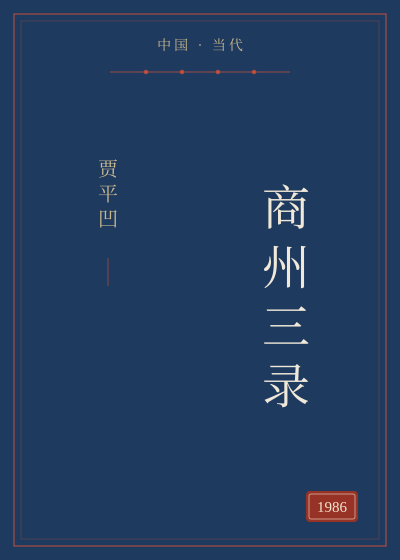
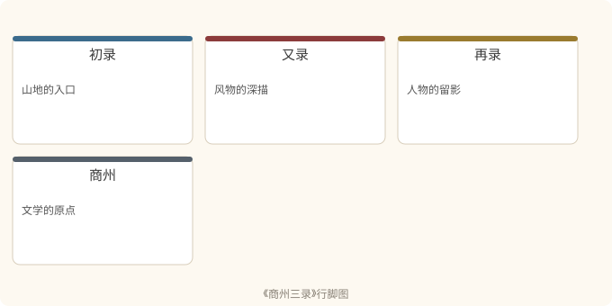

商州三录
一、基本信息
| 作者 | 贾平凹 |
|---|---|
| 成书/出版 | 1986年前后（英文维基 B217：Shangzhou Sanlu 商州三录 (Three chapters about Shangzhou, 1986)） Jia Pingwa — Wikipedia (EN)（百科全书） |
| 国别/地区 | 中国 |
| 时代 | 现当代 · 当代 |
| 体裁 | 散文集 |
| 语言 | 汉语（白话） |

《商州三录》行脚图（主题·结构图）
二、创作背景
英文维基（B217）：'Essay collections: Shangzhou Sanlu 商州三录 (Three chapters about Shangzhou, 1986)'——贾平凹散文代表作。
与商州小说互为表里：'Jia's sketches of everyday life in Shangzhou were published to greater and greater success'（B217 综述语境）。
三、内容脉络
初录/又录/再录：商州山地的行脚笔记——方言、风俗、山川与人物（篇目通说待核）。
四、主要人物表
| 人物 | 身份 | 说明 |
|---|---|---|
| 行脚者 | 作者 | 商州的记录者 |
五、主题与艺术特点
- 商州：贾平凹文学地理的原点（B217 语境）。
- 散文的'寻根'（通说）。
- 民情风俗的百科（通说待核）。
六、影响与评论
- 英文维基：列入贾平凹散文代表作（B217）。
Jia Pingwa — Wikipedia (EN)（百科全书） - 为商州小说系列提供地志与人物素材（B217 语境）。
Jia Pingwa — Wikipedia (EN)（百科全书）
七、阅读建议
难点
- 陕南方言。
- 笔记体的散点结构。
- 《商州三录》（人民文学出版社/作家出版社版本，通说待核）。
先散文后小说（商州系列）。
八、待核实
- 三录各自出版年份核对。
- 篇目核对。
- 《月迹》散文集与三录的关系待核。
本页主要来源
贾平凹的其他收录作品：秦腔